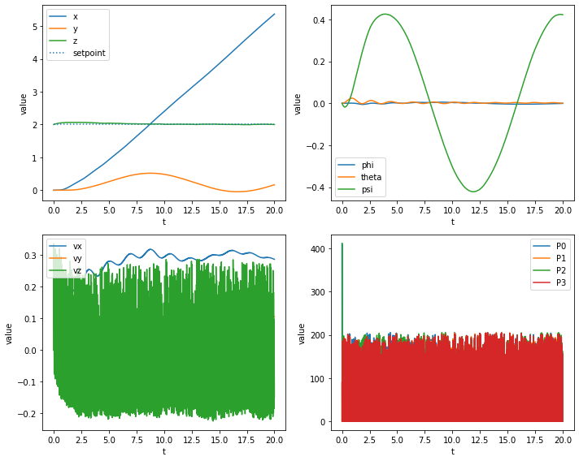
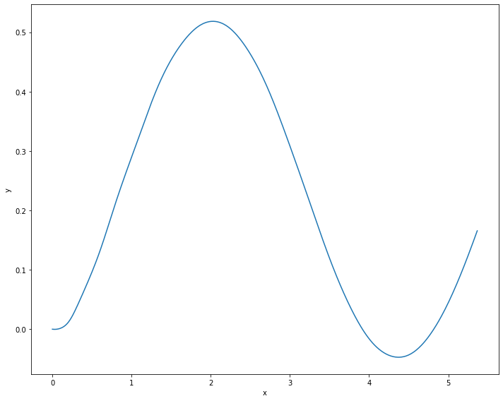

Simple Velocity-Heading
[1]:
import sys
[2]:
for _ in range(2):
try:
import jdrones
except ModuleNotFoundError:
print("jdrones not found, installing")
!{sys.executable} -m pip install -q git+ssh://git@github.com/iwishiwasaneagle/jdrones/
[3]:
import gymnasium
import jdrones
import jdrones.types
import pandas as pd
import numpy as np
from tqdm.auto import tqdm
pybullet build time: Feb 2 2023 13:13:41
[4]:
%matplotlib inline
import seaborn as sns
import matplotlib.pyplot as plt
/home/jhewers/.local/lib/python3.10/site-packages/scipy/__init__.py:146: UserWarning: A NumPy version >=1.16.5 and <1.23.0 is required for this version of SciPy (detected version 1.23.5
warnings.warn(f"A NumPy version >={np_minversion} and <{np_maxversion}"
[5]:
from collections import deque
[6]:
T = 20
dt = 1/240
seed = 1337
initial_state = jdrones.types.State()
initial_state.pos = (0,0,2)
[7]:
env = gymnasium.make("VelHeadAltDroneEnv-v0",dt=dt,initial_state=initial_state)
env = gymnasium.wrappers.TimeLimit(env, max_episode_steps=int(T/dt))
b3Warning[examples/Importers/ImportURDFDemo/BulletUrdfImporter.cpp,126]:
No inertial data for link, using mass=1, localinertiadiagonal = 1,1,1, identity local inertial frameb3Warning[examples/Importers/ImportURDFDemo/BulletUrdfImporter.cpp,126]:
base_link
[8]:
observations = deque()
obs, info = env.reset(seed=seed)
setpoint = [.3,0,0,2]
trunc, term = False, False
for i in tqdm(range(int(T/dt)-1)):
setpoint[2] = 0.4*np.sin(0.4*i*dt)
obs, _, term, trunc, info = env.step(setpoint)
observations.append(obs)
[9]:
data = np.array(observations)
t = np.linspace(0,len(data)*dt,len(data))
df = pd.DataFrame(data,columns=["x","y","z","qx","qy","qz","qw","phi","theta","psi","vx","vy","vz","p","q","r","P0","P1","P2","P3"],index=t)
df.index.name = 't'
df
[9]:
| x | y | z | qx | qy | qz | qw | phi | theta | psi | vx | vy | vz | p | q | r | P0 | P1 | P2 | P3 | |
|---|---|---|---|---|---|---|---|---|---|---|---|---|---|---|---|---|---|---|---|---|
| t | ||||||||||||||||||||
| 0.000000 | 0.000000e+00 | 0.000000e+00 | 2.000000 | 0.000000e+00 | 0.000000 | 0.000000 | 1.000000 | 0.000000e+00 | -0.000000 | 0.000000 | 0.000000e+00 | 0.000000e+00 | 0.000000 | 0.000000 | 0.000000 | 0.000000 | 0.00 | 0.000000 | 412.02 | 0.000000 |
| 0.004168 | 0.000000e+00 | 0.000000e+00 | 2.000545 | 0.000000e+00 | 0.000036 | -0.000179 | 1.000000 | -1.279180e-08 | 0.000072 | -0.000358 | 0.000000e+00 | 0.000000e+00 | 0.130800 | 0.000000 | 0.017167 | -0.085837 | 412.02 | 90.512735 | 0.00 | 90.512735 |
| 0.008335 | 0.000000e+00 | 5.514537e-27 | 2.001949 | -2.810108e-09 | 0.000036 | -0.000458 | 1.000000 | -3.836714e-08 | 0.000072 | -0.000916 | 0.000000e+00 | 1.323489e-24 | 0.337003 | -0.000006 | -0.000003 | -0.133946 | 0.00 | 0.000000 | 0.00 | 0.000000 |
| 0.012503 | -3.349746e-16 | 1.198058e-19 | 2.003183 | -5.619685e-09 | 0.000036 | -0.000737 | 1.000000 | -6.393040e-08 | 0.000072 | -0.001474 | -8.039389e-14 | 2.875338e-17 | 0.296053 | -0.000006 | -0.000003 | -0.133920 | 0.00 | 0.000000 | 0.00 | 0.000000 |
| 0.016670 | -1.532773e-15 | 9.619846e-19 | 2.004246 | -8.428730e-09 | 0.000036 | -0.001016 | 0.999999 | -8.948158e-08 | 0.000071 | -0.002032 | -2.874716e-13 | 2.021229e-16 | 0.255114 | -0.000006 | -0.000003 | -0.133895 | 0.00 | 0.000000 | 0.00 | 0.000000 |
| ... | ... | ... | ... | ... | ... | ... | ... | ... | ... | ... | ... | ... | ... | ... | ... | ... | ... | ... | ... | ... |
| 19.979163 | 5.361022e+00 | 1.638916e-01 | 2.001864 | -4.306678e-04 | 0.000119 | 0.209787 | 0.977747 | -7.923217e-04 | 0.000413 | 0.422714 | 2.871268e-01 | 1.057658e-01 | 0.015675 | 0.001750 | 0.000128 | -0.016497 | 0.00 | 0.000000 | 0.00 | 0.000000 |
| 19.983331 | 5.362219e+00 | 1.643322e-01 | 2.001759 | -4.270444e-04 | 0.000118 | 0.209753 | 0.977754 | -7.854557e-04 | 0.000411 | 0.422646 | 2.870643e-01 | 1.057428e-01 | -0.025203 | 0.001749 | 0.000128 | -0.016494 | 0.00 | 0.000000 | 0.00 | 0.000000 |
| 19.987498 | 5.363414e+00 | 1.647727e-01 | 2.001484 | -4.234215e-04 | 0.000118 | 0.209720 | 0.977761 | -7.785906e-04 | 0.000408 | 0.422577 | 2.870017e-01 | 1.057197e-01 | -0.066073 | 0.001749 | 0.000128 | -0.016492 | 0.00 | 0.000000 | 0.00 | 0.000000 |
| 19.991666 | 5.364610e+00 | 1.652131e-01 | 2.001038 | -4.197993e-04 | 0.000117 | 0.209686 | 0.977769 | -7.717266e-04 | 0.000406 | 0.422508 | 2.869389e-01 | 1.056966e-01 | -0.106933 | 0.001749 | 0.000128 | -0.016489 | 0.00 | 0.000000 | 0.00 | 0.000000 |
| 19.995833 | 5.365805e+00 | 1.656534e-01 | 2.000422 | -4.161776e-04 | 0.000117 | 0.209653 | 0.977776 | -7.648636e-04 | 0.000403 | 0.422439 | 2.868756e-01 | 1.056733e-01 | -0.147785 | 0.001749 | 0.000128 | -0.016486 | 0.00 | 0.000000 | 0.00 | 0.000000 |
4799 rows × 20 columns
[10]:
df_long = df.melt(var_name='variable', value_name='value',ignore_index=False).reset_index()
df_long
[10]:
| t | variable | value | |
|---|---|---|---|
| 0 | 0.000000 | x | 0.000000e+00 |
| 1 | 0.004168 | x | 0.000000e+00 |
| 2 | 0.008335 | x | 0.000000e+00 |
| 3 | 0.012503 | x | -3.349746e-16 |
| 4 | 0.016670 | x | -1.532773e-15 |
| ... | ... | ... | ... |
| 95975 | 19.979163 | P3 | 0.000000e+00 |
| 95976 | 19.983331 | P3 | 0.000000e+00 |
| 95977 | 19.987498 | P3 | 0.000000e+00 |
| 95978 | 19.991666 | P3 | 0.000000e+00 |
| 95979 | 19.995833 | P3 | 0.000000e+00 |
95980 rows × 3 columns
[11]:
fig, ax = plt.subplots(2,2,figsize=(10,8))
ax = ax.flatten()
sns.lineplot(data=df_long.query("variable in ('x','y','z')"), x='t',y='value',hue='variable',ax=ax[0])
ax[0].hlines(setpoint[3],df.index.min(),df.index.max(),linestyles='dotted',label="setpoint")
ax[0].legend()
sns.lineplot(data=df_long.query("variable in ('phi','theta','psi')"), x='t',y='value',hue='variable',ax=ax[1])
ax[1].legend()
sns.lineplot(data=df_long.query("variable in ('vx','vy','vz')"), x='t',y='value',hue='variable',ax=ax[2])
ax[2].legend()
sns.lineplot(data=df_long.query("variable in ('P0','P1','P2','P3')"), x='t',y='value',hue='variable',ax=ax[3])
ax[3].legend()
fig.tight_layout()

[12]:
fig, ax = plt.subplots(1,1,figsize=(10,8))
sns.lineplot(data=df, x='x',y='y',ax=ax)
fig.tight_layout()
